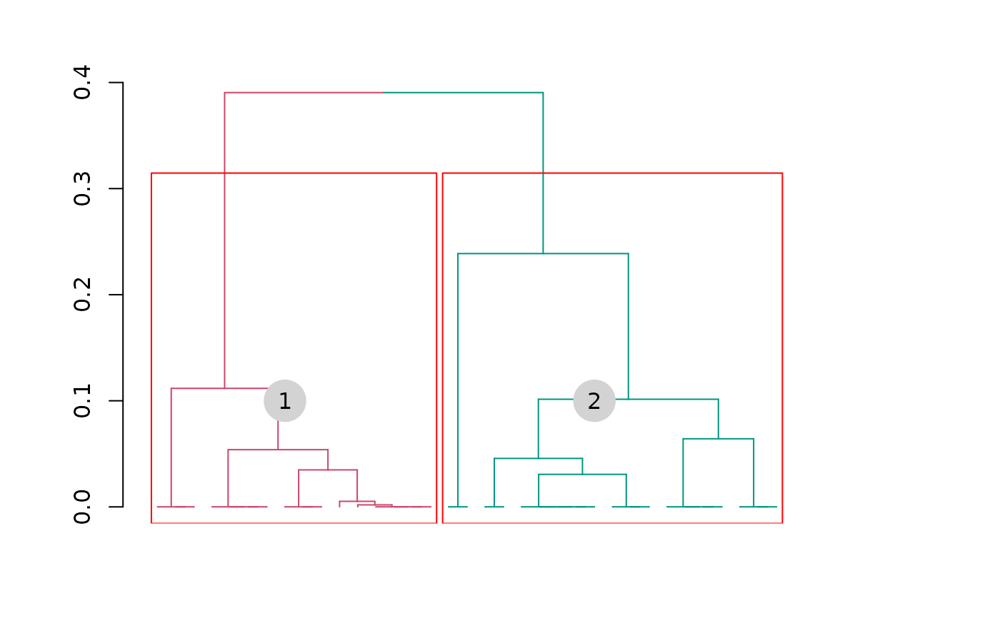

Identifies linkage groups of markers using the results of two-point (pairwise) analysis.
group_mappoly(
input.mat,
expected.groups = NULL,
inter = TRUE,
comp.mat = FALSE,
LODweight = FALSE,
verbose = TRUE
)an object of class mappoly.rf.matrix
when available, inform the number of expected linkage groups (i.e. chromosomes) for the species
if TRUE (default), plots a dendrogram highlighting the
expected groups before continue
if TRUE, shows a comparison between the reference
based and the linkage based grouping, if the chromosome information is
available (default = FALSE)
if TRUE, clusterization is weighted by the square of the
LOD Score
logical. If TRUE (default), current progress is shown;
if FALSE, no output is produced
Returns an object of class mappoly.group, which is a list
containing the following components:
the referred dataset name
a list containing information related to the UPGMA grouping method
the number of expected linkage groups
the groups to which each of the markers belong
comparison between the genomic group information
(when available) and the groups provided by group_mappoly
the threshold used on the segregation test when reading the dataset
the p-values associated with the segregation test for all markers in the sequence
Mollinari, M., and Garcia, A. A. F. (2019) Linkage analysis and haplotype phasing in experimental autopolyploid populations with high ploidy level using hidden Markov models, _G3: Genes, Genomes, Genetics_. doi:10.1534/g3.119.400378
## Getting first 20 markers from two linkage groups
all.mrk <- make_seq_mappoly(hexafake, c(1:20,601:620))
red.mrk <- elim_redundant(all.mrk)
unique.mrks <- make_seq_mappoly(red.mrk)
counts <- cache_counts_twopt(unique.mrks, cached = TRUE)
all.pairs <- est_pairwise_rf(input.seq = unique.mrks,
count.cache = counts,
ncpus = 1,
verbose = TRUE)
#> INFO: Going singlemode. Using one CPU for calculation.
## Full recombination fraction matrix
mat.full <- rf_list_to_matrix(input.twopt = all.pairs)
#> INFO: Going singlemode. Using one CPU.
plot(mat.full, index = FALSE)
lgs <- group_mappoly(input.mat = mat.full,
expected.groups = 2,
inter = TRUE,
comp.mat = TRUE, #this data has physical information
verbose = TRUE)
lgs
#> This is an object of class 'mappoly.group'
#> ------------------------------------------
#> Criteria used to assign markers to groups:
#>
#> - Number of markers: 35
#> - Number of linkage groups: 2
#> - Number of markers per linkage groups:
#> group n.mrk
#> 1 16
#> 2 19
#> ------------------------------------------
#> 1 2 NoChr
#> 1 16 0 0
#> 2 1 18 0
#> ------------------------------------------
plot(lgs)
